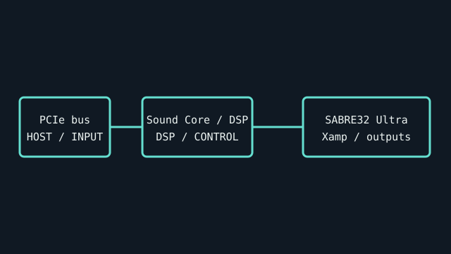

[ INDIVIDUAL COMPONENT // SOUND HARDWARE ]
Creative Sound BlasterX AE-5 Plus
PCIe sound card in Creative’s AE series with discrete Xamp headphone amplification and the SABRE32 Ultra DAC. Do not conflate it with the original AE-5’s included accessory bundles.

IDENTIFICATION: Match the complete printed model, revision, bundled breakout, and accessory markings. Specs below describe this named model; family-level variants are not assumed interchangeable.
Specifications
| Catalog subcategory | PCI Express sound cards |
|---|---|
| Product ID | Creative Sound BlasterX AE-5 Plus (PCIe model) |
| Bus / host | PCI Express x1 card. |
| Connectors and I/O | Analog multichannel speaker output, headphone output, microphone/line input, and optical S/PDIF output; RGB LED power/accessory wiring depends on case and package. |
| Chipset / conversion / protocol | ESS SABRE32 Ultra DAC, up to 32-bit/384-kHz stereo playback as specified by Creative; 122 dB DNR/SNR product rating. Xamp discrete headphone amp is specified for headphones up to 600 ohms, output impedance 1 ohm. |
| Drivers / operating systems | Creative Sound Blaster Command and AE-5 Plus driver packages are Windows-specific; check Creative’s product support page for exact supported OS versions. Do not infer macOS/Linux drivers. |
| Variant compatibility | AE-5 Plus is distinct from AE-5 and AE-7. Confirm the Plus model, optical daughter/adapter accessories if included, and the correct Sound Blaster Command generation. |
Service & preservation
Record exact model and accessory kit, keep RGB power leads with the card, and save the driver/control-panel version. Inspect PCIe edge and headphone socket. Keep loudness testing conservative; the low-impedance amp can drive sensitive headphones strongly.
Identification and compatibility checks
- Photograph the product/model label, board silkscreen/revision, connector faces, cable assemblies, and accessory part numbers before installation.
- Check electrical bus and host slot or USB/MIDI protocol support against the exact manual; connector shape alone does not establish compatibility.
- For analog I/O, confirm line/mic/instrument level, phantom-power behavior, channel map, and direction from the model-specific documentation before connecting equipment.
- When software or driver support is uncertain, preserve the last known-good installer and document tested host OS, driver version, and device identifier.
Primary manufacturer & standards sources
- Creative Sound BlasterX AE-5 Plus product specificationsManufacturer model page for DAC, Xamp, output, and performance claims.
- Creative official driver downloadsManufacturer software archive; search Sound BlasterX AE-5 Plus and confirm the selected OS/package.
- PCI-SIG specificationsPCI Express bus standard reference.
Source selection is model-specific where an original manual or vendor product/support page exists. Archived scans preserve manufacturer documentation; operating-system claims are limited to what the cited product/manual materials identify.